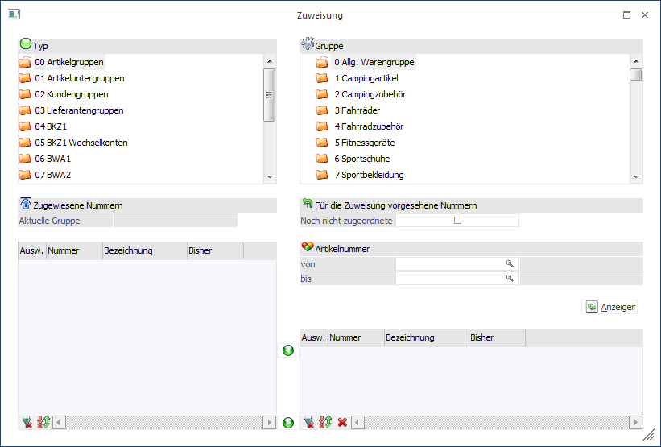
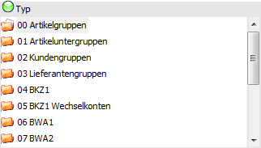
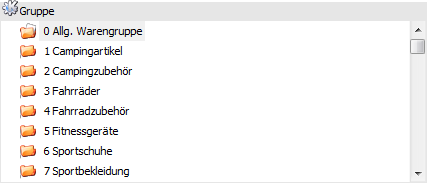
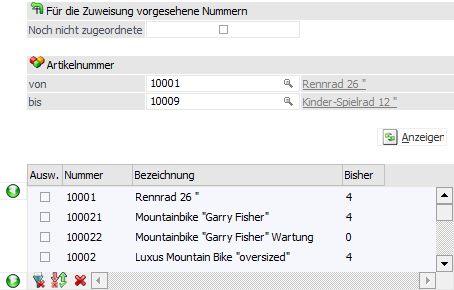
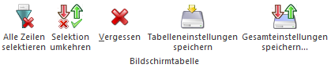
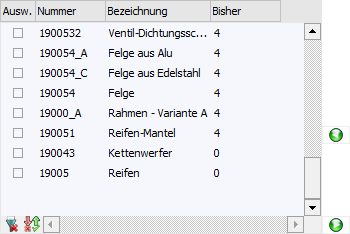
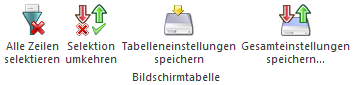
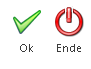

Im Menüpunkt…
1 WinLine FAKT
1 Stammdaten
1 Gruppenzuweisung
… können einfach Zuweisung stattfinden, z.B. Artikel erhalten neue Artikeluntergruppen oder Konten neue BKZ’s, ohne jeden Datensatz einzeln aufrufen zu müssen.

Das Fenster ist hierbei in vier Bereiche unterteilt:
ü Typ
ü Gruppe
ü Auswahl
ü Zuweisung
Bereich "Typ"

Zunächst wird in diesem Bereich ausgewählt, welcher Gruppentyp geändert werden soll. Folgende Typen stehen hierbei zur Verfügung:
ü 00 - Artikelgruppen
ü 01 - Artikeluntergruppen
ü 02 - Kundengruppen
ü 03 - Lieferantengruppen
ü 04 - BKZ1
ü 05 - BKZ1 Wechselkonto
ü 06 - BWA1
ü 07 - BWA2
ü 08 - BWA3
ü 09 - KN8 Warenkatalog
ü 10 - BKZ2
ü 11 - BKZ2 Wechselkonto
ü 12 - BKZ3
ü 13 - BKZ3 Wechselkonto
ü 14 - BWA-Gruppen
Bereich "Gruppe"

Nach der Auswahl des Typs werden an dieser Stelle alle zugehörigen Gruppen angezeigt. Durch Auswahl einer Gruppe wird dann festgelegt, welcher Gruppe in weitere Folge Datensätze hinzugefügt oder entfernt werden sollen.
Bereich "Auswahl"

In diesem Bereich kann ausgewählt werden, welche Stammdaten neu zuweisen bzw. editieren werden sollen.
Ø Noch nicht zugeordnete
Durch Aktivieren der Checkbox werden in der darunterliegenden Tabelle nur jene Datensätze angezeigt, welche noch nicht zugeordnet wurden (z.B. Artikel, die noch keine Artikeluntergruppe hinterlegt haben).
Ø Selektion von / bis
Je nach Typ wird an dieser Stelle eine Selektion (z.B. nach Artikelnummer oder nach Kontonummer) zur Verfügung gestellt. Die hier getroffene Eingrenzung wirkt sich auf das Ergebnis in der darunterliegenden Tabelle aus.
Ø Anzeigen
Durch Anwahl des Buttons "Anzeigen" wird die Tabelle gefüllt.
Ø Spalte "Ausw."
An dieser Stelle werden die Datensätze markiert, welche zugewiesen werden soll.
Ø zuweisen
Durch Anwahl dieser Buttons können die selektierten Stammdaten (Spalte "Ausw.") in die Zuweisungstabelle geschoben werden.
Tabellenbuttons

Ø Alle Zeilen selektieren
Durch Anwahl dieses Buttons werden alle Stammdaten in der Tabelle selektiert.
Ø Selektion umkehren
Durch Anwahl des Buttons "Selektion umkehren" werden alle selektierten Stammdaten deselektiert und alle deselektierten Stammdaten selektiert.
Ø Vergessen
Mit Hilfe dieses Buttons wird die Tabelle geleert.
Ø Tabelleneinstellungen speichern
Die Spalten einer Tabelle können grundsätzlich an beliebige Positionen verschoben, bzw. in der Breite entsprechend angepasst werden. Durch Anwahl des Buttons "Tabelleneinstellungen speichern" werden die Einstellungen benutzerspezifisch gespeichert und bei dem nächsten Aufruf des Programmpunktes wieder vorgeschlagen.
Ø Gesamteinstellungen speichern
Im Gegensatz zu "Tabelleneinstellungen speichern" können mit "Gesamteinstellungen speichern" mehrere Tabellenaufbauten gespeichert und nach Wunsch geladen werden. Zusätzlich werden Sonderfunktionen der Tabelle (z.B. "Spalte gruppieren") ebenfalls bei der Speicherung bedacht.
Bereich "Zuweisung"

In diesem Bereich werden alle Stammdatensätze angezeigt, welche bereits zugewiesen sind oder neu zugewiesen werden sollen.
Ø Spalte "Ausw."
An dieser Stelle werden die Datensätze markiert, welche nicht mehr zugewiesen werden soll.
Ø nicht zuweisen
Durch Anwahl dieser Buttons können die selektierten Stammdaten (Spalte "Ausw.") aus der Zuweisungstabelle entfernt werden.
Tabellenbuttons

Ø Alle Zeilen selektieren
Durch Anwahl dieses Buttons werden alle Stammdaten in der Tabelle selektiert.
Ø Selektion umkehren
Durch Anwahl des Buttons "Selektion umkehren" werden alle selektierten Stammdaten deselektiert und alle deselektierten Stammdaten selektiert.
Ø Tabelleneinstellungen speichern
Die Spalten einer Tabelle können grundsätzlich an beliebige Positionen verschoben, bzw. in der Breite entsprechend angepasst werden. Durch Anwahl des Buttons "Tabelleneinstellungen speichern" werden die Einstellungen benutzerspezifisch gespeichert und bei dem nächsten Aufruf des Programmpunktes wieder vorgeschlagen.
Ø Gesamteinstellungen speichern
Im Gegensatz zu "Tabelleneinstellungen speichern" können mit "Gesamteinstellungen speichern" mehrere Tabellenaufbauten gespeichert und nach Wunsch geladen werden. Zusätzlich werden Sonderfunktionen der Tabelle (z.B. "Spalte gruppieren") ebenfalls bei der Speicherung bedacht.
Buttons

Ø Ok
Durch Anwahl des Buttons "Ok" bzw. der Taste F5 wird die Zuweisung gespeichert.
Ø Ende
Durch Anwahl des Buttons "Ende" bzw. der Taste F5 wird das Fenster geschlossen und alle nicht gespeicherte Eingabe verworfen.